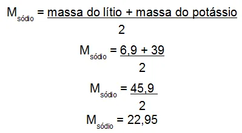
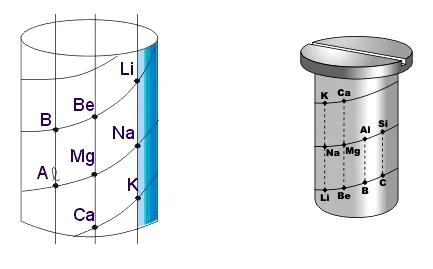
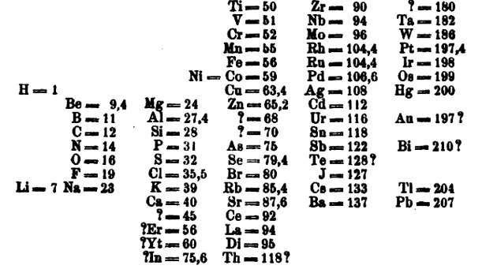

História da Tabela
A tabela periódica se originou no começo do séc XIX, por volta de 1829. Nessa época, os químicos
decidiram
organizar os elementos químicos conhecidos. Eles já tinham conhecimento sobre diversas características, como a
densidade, massa atômica, relatividade, ponto de fusão/ebulição e estado físico de 30 elementos. Essas
informações foram o ponto de partida para a criação da tabela periódica.
Durante 200 anos, diversos químicos buscaram encontrar uma forma de organizar os elementos. A Tabela Periódica
que conhecemos hoje já teve muitas versões, frutos de incontáveis tentativas de atingir a organização.
Johann Döbereiner: Lei das Tríades
Johann W. Döbereiner (1780-1849) foi um dos primeiros a encontrar uma ordem para organizar os elementos químicos. Usando as massas atômicas estimadas, ele organizou os elementos em grupos de três, todos com propriedades semelhantes. Nesses grupos, o elemento central tinha como massa a média aritmética dos outros dois elementos. Porém, isso não acontecia com todos os elementos.

Como podemos observar na tabela, a massa atômica do elemento sódio corresponde à média aritmética dos outros dois elementos: Lítio e potássio.
Alexandre-Emile B. de Chancourtois: Parafuso Telúrico
Alexandre-Emile B. de Chancourtois (1820-1886) organizou 16 elementos com o modelo conhecido como “Parafuso Telúrico”, onde as informações eram distribuídas na base, em um formato cilíndrico, colocando os elementos com propriedades semelhantes alinhados verticalmente. Os elementos era organizados por ordem crescente de sua massa atômica.
John Newlands: Lei das Oitavas
John Newlands (1837-1898) também propôs um tipo de organização, que fio conhecido como “Lei das Oitavas”.
Além de químico, Newlands também era músico, o que o levou a organizar os 61 elementos até então conhecidos
de acordo com as notas musicais. Na sua organização, os elementos eram posicionados em colunas verticais de
7 elementos cada. Porém, esse também era um método restrito, já que ia até o cálcio.
Sua ideia foi alvo de piadas no mundo da química, sua teoria trouxe importantes descobertas: Quando os
elementos são organizados por ordem crescente de massa atômica, as propriedades começavam a se repetir a
cada oito elementos. Dessa forma, o primeiro elemento de uma oitava apresentava semelhanças com as
propriedades do primeiro elemento da outra oitava.
Dmitri Mendeleiev: Tabela periódica de Mendeleev
Em 1869, Dmitri Mendeleiev (1834-1907) resolveu organizar fichas com as propriedades de cada elemento em ordem crescente de massa atômica. Ele também distribuiu as fichas em colunas verticais e linhas horizontais, tomando as características e semelhanças de cada elemento como base. Mendeleieve também deixou alguns espaços vazios, prevendo novos elementos com base no que havia percebido. Sua organização foi a mais completa até então. Mesmo não se sabendo nada sobre os átomos, esse foi um trabalho fundamental para a criação da tabela como a conhecemos hoje.
Henry Moseley: Tabela periódica atual
Henry Moseley (1887-1915) descobriu coisas importantes no ano de 1913. Ele estabeleceu o conceito de número
atômico, desenvolvendo estudos com o intuito de explicar a estrutura dos átomos. Moseley reorganizou a
tabela de Mendeleiev usando os números atômicos no lugar da massa, concertando algumas falhas anteriores.
Moseley posicionou os elementos de mesmas características químicas nas mesmas colunas verticais, além de
definir o conceito da periodicidade:
“Muitas propriedades físicas e químicas dos elementos variam periodicamente na sequência dos números
atômicos.”